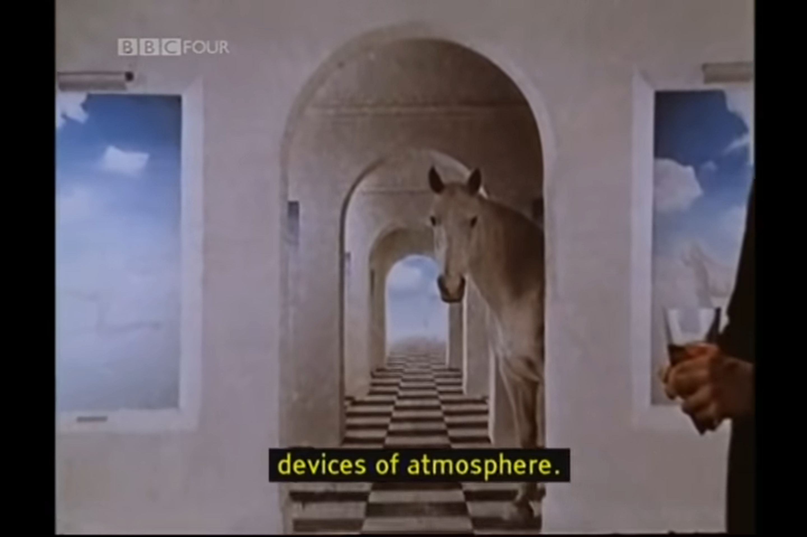

Hi
Episode 1
This part of the episode was visually striking to me.


Hi
Episode 2
O_o
John Berger sexist????
* sees later conversation *
They had me in the first half ngl
...Well maybe they still have me
How is your day?
This part of the episode was visually striking to me.
O_o
* sees later conversation *
They had me in the first half ngl
...Well maybe they still have me
I'm torn on whether this show would make a great podcast or a horrible one. So many moments of long, uncomfortable silence, but I also like his accent. Also, the part where Berger roasts a bunch of paintings of Mary Magdalene is kinda fire.
"In each case, the way the picture is painted contradicts the essence of the story. The method of painting, the way of seeing, can only envisage her as being, before everything else, takeable. The hypocrisy is sexual. The title suggests sacred love. The painting, with title as alibi, speaks of profane love."
I'm tired man why is everybody in all of these pictures nude T-T
I feel like this episode is especially creepy because of the background music and the prolonged period where all we get are pictures and one-word commentaries.

Overall Thoughts: This was pretty weird, but I kinda liked it. John Berger is clearly a very philosophical person, and I think he has some really good points about the purpose and use of both art and photography, and how they have changed over time.